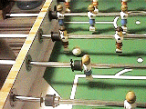
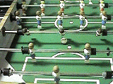
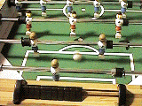
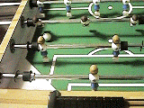
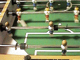
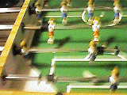

*My Thunder Attack*
| #1. Let the ball go to the guy either at the top or bottom. | #2. Then let the guy (either at the top or bottom) pass the ball QUICKLY to the guy in the middle! | #3. Then just "POUND IT" (The ball, of course!) with your middle guy! |
|  |  |  |
*My Super Corner Kick*
| #1. Let the ball goes to the guy either at the top or bottom. | #2. Then let the guy either at the top or bottom kick the ball with the edge of their foot. | p.s. Depends on side: If the ball is at the top, kick it with the right edge of the foot; If the ball is at the bottom, kick it with the left edge of the foot. |
|  |  |  |